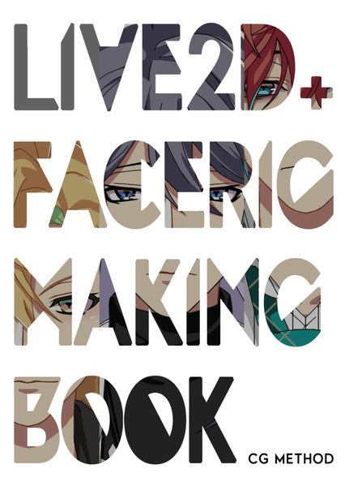

技術書展6で出版。Live2D+FaceRigのメイキング本です。初心者から経験者まで、Live2D+FaceRigのTIPSを書いています。

* 01 FREE版・Pro版の機能比較
* 02 PSD素材の準備
* 03 アートメッシュについて
* 04 パラメータの調整とメッシュの再調整
* 05 テクスチャについて
* 01 Potoshopで設定
* 02 Live2D用に書き出し
* 03 テンプレート適応前の準備
* 04 メッシュの手動編集
* 05 テンプレートの適用
* 06 データの確認と整理
* 07 各パラメータの調整
* 08 物理演算の設定
* 09 Live2Dのデータ書き出し
* 10 FaceRigを起動するまでの設定
* 01 アプリ用のモデルについて
* 02 モデル制作の手順
* 03 立体感を出すモデルの作り方
* 04 Live2D便利機能
* 05 データの軽量化対策
* 06 アニメーターの設定
* 07 モーションの制作・書き出し